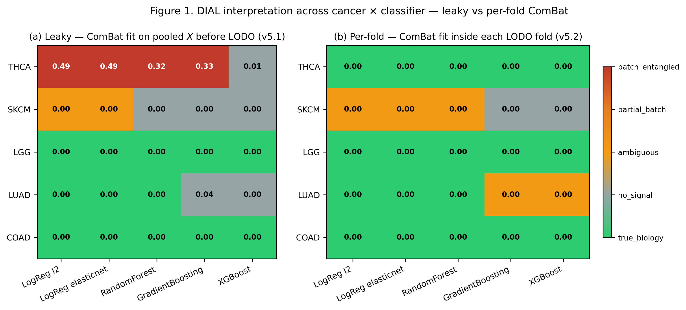
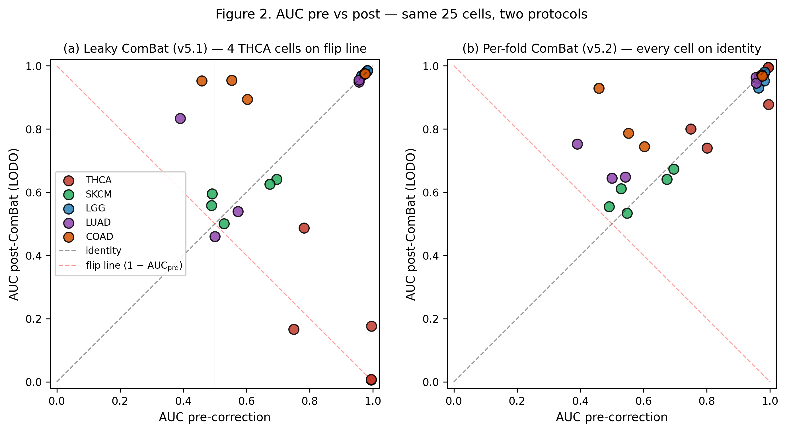
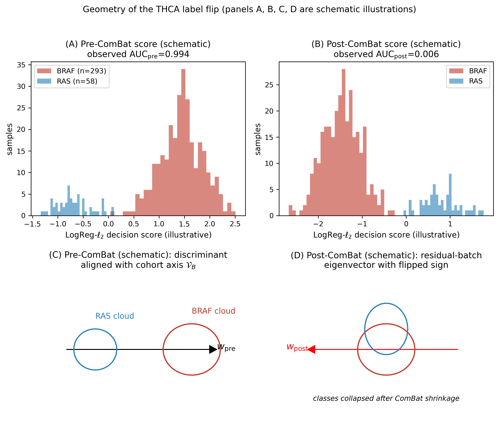
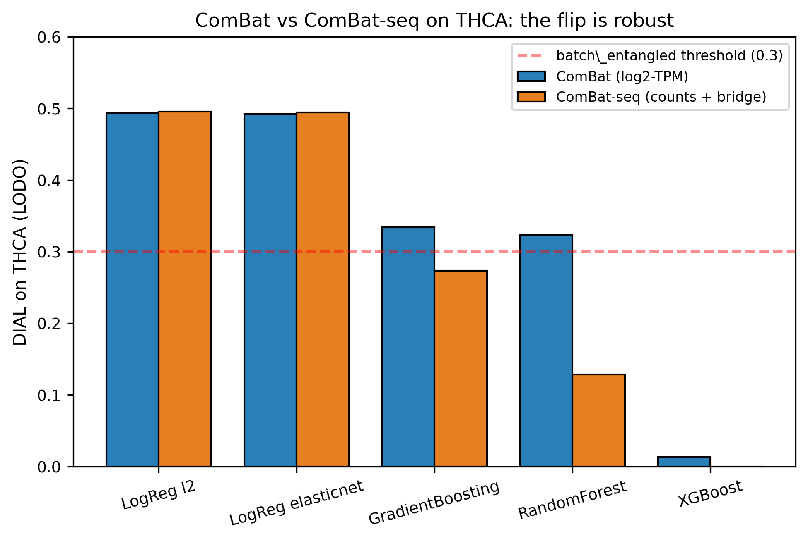
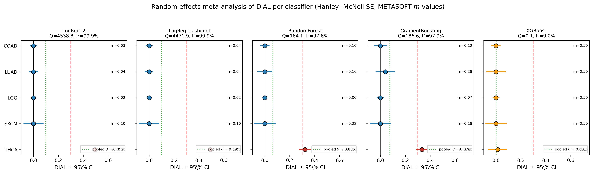
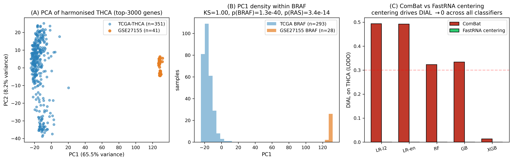
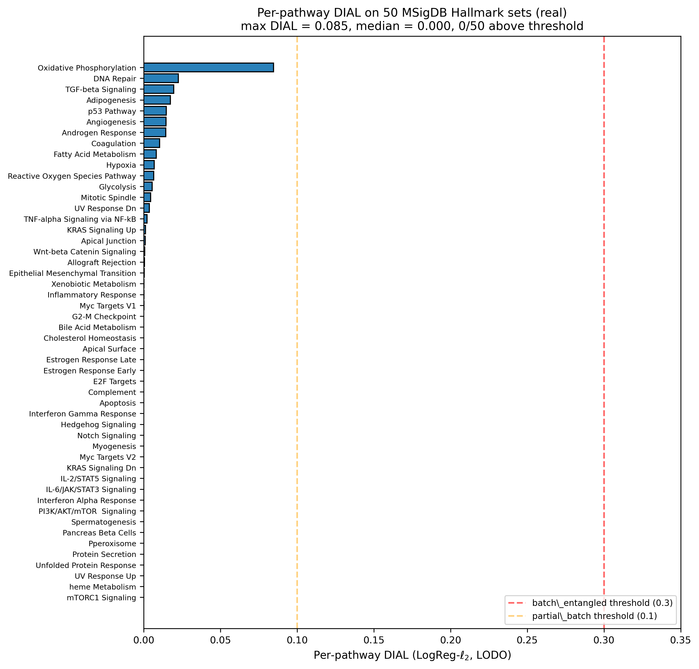
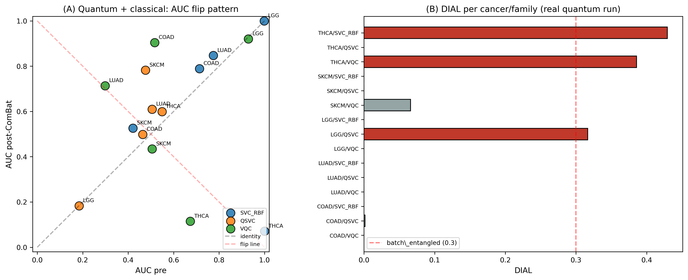
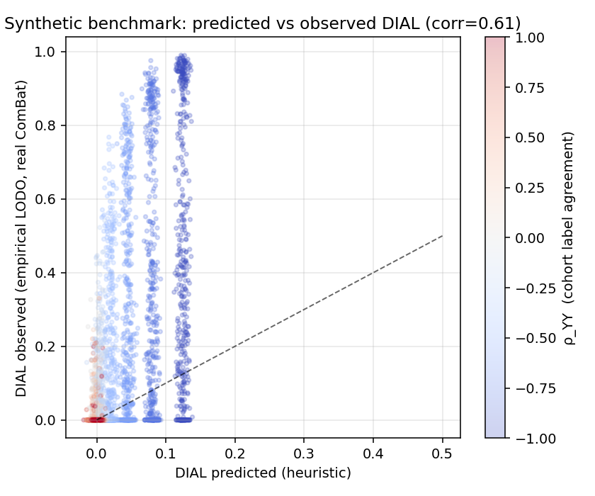

Bioinformatics (OUP) and AAAI 2027 drafts, all eight publication figures with lightbox, three formal proofs as standalone PDFs, framing notes, and every supporting artefact — rendered in-page.
v5.2 critical-assessment, corrected DIAL table, impact analysis, redesigned Table 1, and three reference scripts. The corrected matrix is the basis for the v5.2 reframe of the OUP submission.
THCA flips from 4/5 batch_entangled to 0/5 under proper LODO. ΔDIAL = −0.494 on LogReg-ℓ₂. Read full assessment →
v5.1 fit ComBat on full pooled X before LODO split; the empirical-Bayes priors borrowed strength across all samples, including the held-out cohort. Honest fix: per-fold LinearComBat.fit/transform.
SKCM/LGG/LUAD/COAD: 0/20 batch_entangled in both v5.1 and v5.2. Mean |ΔDIAL| on these 16 directly comparable rows = 0.000.
Companion artefacts: covariate-shift framing · related work · quantum-bound verification (Plotly) · phase diagram (Plotly)
Click any figure to open in a lightbox. Vector PDFs reachable via the caption link.









Plotly interactive versions: forest m-values · ComBat-seq bars · pathway heatmap · cohort centering · quantum grid · LMM scatter · AAAI quantum bound · AAAI ZZ Markov · AAAI phase diagram
Companion v15 NeurIPS proof drafts (Theorem 2 — Unified shift decomposition): theorem2_setup.tex · theorem2_proof.tex
Loading…